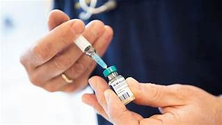

Masern Impfung
Masern sind eine hochansteckende Virusinfektion, die zu schweren Komplikationen wie Lungenentzündung, Gehirnentzündung und in einigen Fällen sogar zum Tod führen kann. Diese Krankheit betrifft vor allem Kinder, die noch nicht geimpft sind, aber auch Erwachsene, die keine Impfung erhalten haben oder deren Impfschutz nicht mehr ausreicht.
Was sind Masern?
Masern werden durch das Masernvirus verursacht, das über Tröpfcheninfektion beim Husten oder Niesen übertragen wird. Die Symptome beginnen meist mit hohem Fieber, Husten, Schnupfen und einem charakteristischen Hautausschlag. Unbehandelt können Masern zu schweren Komplikationen führen, darunter Mittelohrentzündungen, Lungenentzündungen und Entzündungen des Gehirns (Enzephalitis).
Wie schützt die Impfung?
Die Masern-Impfung ist äußerst effektiv und schützt nahezu 100% der geimpften Personen vor einer Erkrankung. Die Impfung ist in der Regel Bestandteil des Standardimpfplans für Kinder, wird aber auch für Erwachsene empfohlen, die noch nicht geimpft sind oder deren Impfschutz abgelaufen ist.
Wann sollte die Masern-Impfung durchgeführt werden?
Die erste Dosis der Masern-Impfung wird in der Regel im Alter von 11 bis 14 Monaten verabreicht, mit einer zweiten Dosis im Alter von 15 bis 23 Monaten. Für Erwachsene, die die Impfung nicht erhalten haben oder deren Impfschutz fraglich ist, wird eine Auffrischungsimpfung empfohlen.
